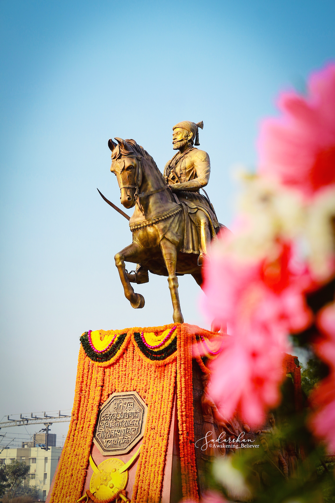

TRIBUTE PAGE
Chhatrapati Shivaji Maharaj
KINF OF MARATHA

Name: Shivaji Bhosale
Birthplace: Shivneri Fort, Pune district, Maharashtra
Parents: Shahaji Bhosale (Father) and Jijabai (Mother)
Reign: 1674–1680
Spouse: Saibai, Soyarabai, Putalabai, Sakvarbai, Laxmibai, Kashibai
Children: Sambhaji, Rajaram, Sakhubai Nimbalkar, Ranubai Jadhav, Ambikabai Mahadik, Rajkumaribai Shirke
Religion: Hinduism
Death: April 3, 1680
Seat of Power: Raigad Fort, Maharashtra
Successor: Sambhaji Bhosale